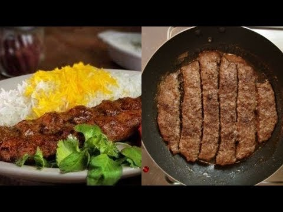

In order to make pan-kebab follow these steps:

- crush one onion and mix it with minced meat(you can use your hand)
- you don't need any oil for this.
- spread the mixture over the surface of the pan, spread it all over the pan, make sure its now a thin layor
- decrease the heat to the lowest and wait till the water in the pan evaporates.
- then put the whole pan inside the oven and let it be there for 15 mins with 100 degrees.
- take out the pan and enjoy your food.